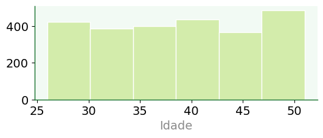
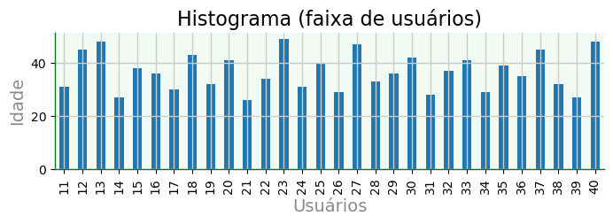
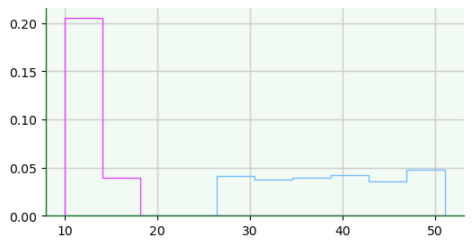
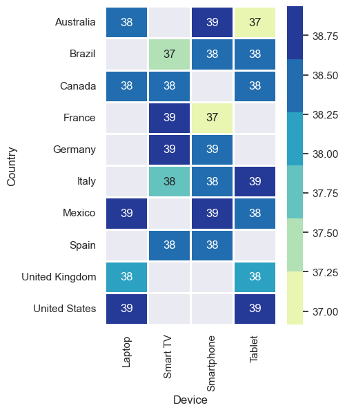

Dataviz Code Session: Quantidades
Contents
10. Dataviz Code Session: Quantidades#
10.1. Objetivos da DCS#
Aplicar técnicas de dataviz para plotagem e manipulação de representações visuais de quantidades.
Elaborar RV para dados acerca de consumidores da Netflix (Fonte: kaggle).
10.2. Ferramentas utilizadas#
Módulos Python
pandasnumpymatplotlibseaborn
10.3. Aplicação do modelo referencial#
Vide Capítulo 3.
import pandas as pd
import numpy as np
import seaborn as sb
import matplotlib.pyplot as plt
plt.style.use('../etc/gcpeixoto-datavis.mplstyle') # style sheet
10.3.1. Dados de entrada pré-processados#
Carregamento de dados
df = pd.read_csv('../data/netflix-data.csv')
df = df.set_index('User ID')
df
| Subscription Type | Monthly Revenue | Join Date | Last Payment Date | Country | Age | Gender | Device | Plan Duration | |
|---|---|---|---|---|---|---|---|---|---|
| User ID | |||||||||
| 1 | Basic | 10 | 15-01-22 | 10-06-23 | United States | 28 | Male | Smartphone | 1 Month |
| 2 | Premium | 15 | 05-09-21 | 22-06-23 | Canada | 35 | Female | Tablet | 1 Month |
| 3 | Standard | 12 | 28-02-23 | 27-06-23 | United Kingdom | 42 | Male | Smart TV | 1 Month |
| 4 | Standard | 12 | 10-07-22 | 26-06-23 | Australia | 51 | Female | Laptop | 1 Month |
| 5 | Basic | 10 | 01-05-23 | 28-06-23 | Germany | 33 | Male | Smartphone | 1 Month |
| ... | ... | ... | ... | ... | ... | ... | ... | ... | ... |
| 2496 | Premium | 14 | 25-07-22 | 12-07-23 | Spain | 28 | Female | Smart TV | 1 Month |
| 2497 | Basic | 15 | 04-08-22 | 14-07-23 | Spain | 33 | Female | Smart TV | 1 Month |
| 2498 | Standard | 12 | 09-08-22 | 15-07-23 | United States | 38 | Male | Laptop | 1 Month |
| 2499 | Standard | 13 | 12-08-22 | 12-07-23 | Canada | 48 | Female | Tablet | 1 Month |
| 2500 | Basic | 15 | 13-08-22 | 12-07-23 | United States | 35 | Female | Smart TV | 1 Month |
2500 rows × 9 columns
10.4. Visualização de quantidades com histogramas#
10.4.1. Plotagem com pandas#
O módulo
pandaspossui métodos para plotagem básica que provêm domatplotlibe são um wrapper deplt.plot().Esses métodos são diretamente aplicáveis a
SerieseDataFrames.
Histogramas para objetos
DataFrameVisualizar distribuições para todas as variáveis possíveis.
df.hist(figsize=(8,2),
bins=6,
grid=False,
xlabelsize=14,
ylabelsize=10,
xrot=60,
yrot=-20);

Histogramas para objetos
Series
fig, ax = plt.subplots()
df['Age'].hist(figsize=(6,2),
bins=6,
grid=False,
color='#d3ecab',
edgecolor= 'w',
xlabelsize=14,
ylabelsize=14)
ax.set_xlabel('Idade');

Histograma gerado por meio de
plot
df.iloc[10:40]['Age'].plot(kind='bar',
title='Histograma (faixa de usuários)',
figsize=(8,2),
xlabel='Usuários',
ylabel='Idade');

10.4.2. Plotagem com matplotlib#
Histogramas gerados com
histe suas opções.
fig, ax = plt.subplots(figsize=(6,3))
ax.hist(x=df['Age'],
density=True,
histtype='bar',
align='mid',
rwidth=0.8,
color='#99ba00',
bins=8,
alpha=0.5);

fig, ax = plt.subplots(figsize=(6,3))
ax.hist(x=df[['Age','Monthly Revenue']],
density=True,
histtype='step',
align='mid',
rwidth=0.3,
linewidth=1,
color=['#74bbff','#de45fb'],
bins=10);

10.4.3. Plotagem com seaborn#
Opções de plotagem com
histplotPlotar diversidade de casos com alteração das variáveis
f, a = plt.subplots(figsize=(8,3))
sb.set_theme(style='darkgrid')
hp = sb.histplot(data=df,
x='Age', # 'y' para barra horizontal
hue='Gender',
bins=10,
#binwidth=1, # opção com bins
#binrange=(32,40), # extensão
cumulative=False, # cumulativa
stat='percent', # 'count' | 'frequency' | 'probability' | 'density'
multiple='stack',
palette='muted',
kde=True, # density
kde_kws={'bw_method':'silverman', # método de binning: 'scott' | 'silverman'
'bw_adjust':0.5}, # ajuste da largura de banda: quanto maior, mais suave
element='bars', # 'bars' | 'step' | 'poly'
linewidth=1,
edgecolor='w',
log_scale=True,
ax=a)

10.5. Visualização de quantidades com mapa de calor#
f, a = plt.subplots(figsize=(4,6))
dfpt = pd.pivot_table(df, index='Country', columns='Device', values='Age')
# escolha 'mask' para exibir mapa de calor com máscara
test = 'mask'
if test == 'full':
mask = ~np.ones(dfpt.shape,dtype=bool)
else:
mask = ~np.ones(dfpt.shape,dtype=bool)
indices = np.argwhere(dfpt.values > 39)
mask[indices[:,0], indices[:,1]] = True
g = sb.heatmap(data=dfpt,
cmap=sb.color_palette('YlGnBu'),
annot=True,
linewidths=1,
linecolor='white',
square=False,
cbar=True,
xticklabels=True,
yticklabels=True,
mask=mask,
ax=a)
